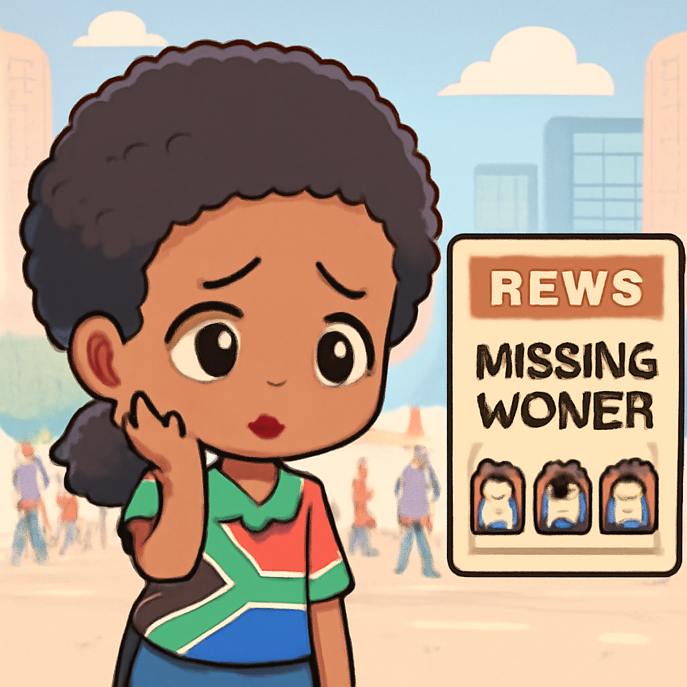
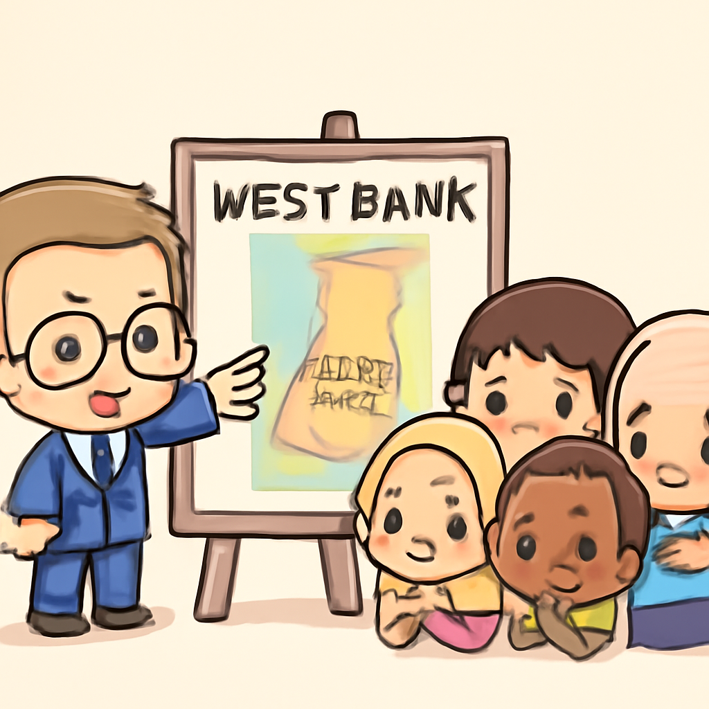
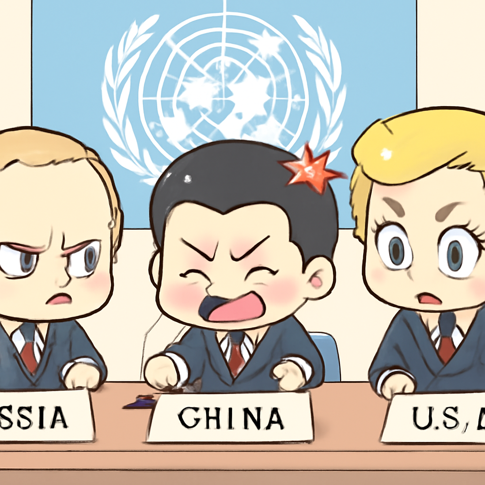

其一 · 南非約翰內斯堡 · 警方調查女性失踪案
南非警方調查連環女性失踪案件，已找到九具屍體。

在南非約翰內斯堡，警方正在調查一系列女性失踪案件，目前已找到九具屍體。雖然警方表示不一定所有案件都相關，但當地女性的恐懼感卻在增長。這不僅是對社會安全的挑戰，也讓人們開始反思如何能更好地保護女性的安全。希望這一切能早日有個好轉！
🔗 原始新聞 ↗
2026-09-18 · 以古觀今，以笑抗愁
南非警方調查連環女性失踪案件，已找到九具屍體。

在南非約翰內斯堡，警方正在調查一系列女性失踪案件，目前已找到九具屍體。雖然警方表示不一定所有案件都相關，但當地女性的恐懼感卻在增長。這不僅是對社會安全的挑戰，也讓人們開始反思如何能更好地保護女性的安全。希望這一切能早日有個好轉！
🔗 原始新聞 ↗
聯合國專家認為美國在伊朗的空襲涉及戰爭罪。
在美國華府，聯合國專家發表報告，指控美國在伊朗的空襲可能構成戰爭罪，尤其是對一所學校的攻擊，造成超過百名兒童喪生。這不僅讓美國面臨國際譴責，還可能影響其在中東的外交政策。看來美國有點兒麻煩了！
🔗 原始新聞 ↗
以色列政府計畫在西岸建立新住房，影響巴勒斯坦國家未來。

在以色列西岸，當地政府近日開始招標數千個住房單位，這一計畫可能會妨礙巴勒斯坦國家的建立。這一舉動引發了國際社會的廣泛關注與爭議，畢竟，對於和平進程來說，這可不是個好消息！
🔗 原始新聞 ↗
俄中聯手否決美國的伊朗核計畫監察提案。

在俄羅斯莫斯科，俄羅斯和中國聯手否決了美國對伊朗核計畫的監察提案。這一事件凸顯了世界大國之間的緊張關係，對伊朗的壓力似乎也未見緩解。看來國際政治的水真的是深不可測啊！
🔗 原始新聞 ↗
加拿大總理呼籲加歐聯盟加強合作，形成民主燈塔。
在加拿大渥太華，總理馬克·卡尼表示，加拿大及歐盟的聯盟將成為其他民主國家的“燈塔”。這項提案不僅是對抗全球不穩定的重要舉措，還可能為兩者之間的經濟合作開創新機會。希望這個燈塔能照亮大家的路！
🔗 原始新聞 ↗